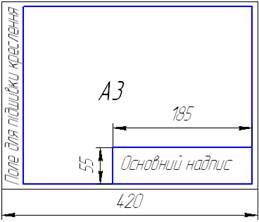
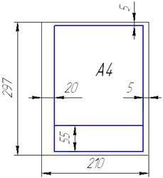
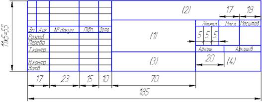
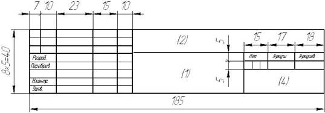
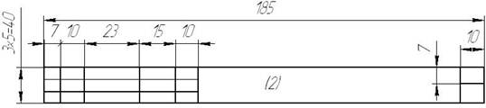
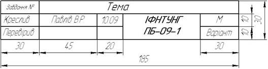

Формати ГОСТ 2.301-68*
Формати аркушів визначаються розмірами зовнішньої рамки, виконаної тонкою лінією.
Основні формати
| Позначення | А0 | А1 | А2 | АЗ | А4 |
| Розміри сторін, мм | 841x1189 | 594x841 | 420x594 | 297x420 | 210x297 |
На всіх форматах (окрім А4) основний напис розміщується вздовж довшої чи коротшої сторони формату. На листах формату А4 основний напис розмішується тільки вздовж коротшої сторони.
 Основний напис ГОСТ 2.104-68*
Основний напис (форма 1) призначений для всіх випадків креслень і схем.
 Основні написи (форма 2 та форма 2а) призначені для текстових документів (специфікацій)
В графах основних надписів вказують: в графі 1 – назву виробу; в графі 2 – позначення документа; в графі 3 – позначення мареріалу деталі; в графі 4 – індекс виробництва. При рішенні домашніх задач з нарисної геометрії та виконання учбових креслень з розділів геометричного та проекційного креслення допускається застосовувати нестандартний основний напис.
Масштаби ГОСТ 2.302-68*
Масштабом називається відношення лінійних розмірів зображення до дійсних розмірів предмета.
| Масштаби зменшення | 1:2; 1:2,5; 1:4; 1:5; 1:10, 1:15; 1:20; 1:25; 1:40; 1:50; 1:75; 1:100; 1:200; 1:400; 1:500; 1:800; 1:1000 |
| Натуральна величина | 1:1 |
| Масштаби збільшення | 2:1; 2,5:1; 4:1; 5:1; 10:1; 20:1; 40:1; 50:1; 100:1 |
На кресленні масштаб вказують у відповідній графі основного надпису – «Масштаб». Типи ліній представлені у таблиці.
| Назва | Вигляд | Товщина лінії | Призначення |
| Суцільна товста основна | 
| (S) 0,5 ... 1,4 мм | Лінії видимого контуру |
| Суцільна тонка | 
| S/3 ... S/2 | Лінії виносні, розмірні, штриховки, виноски |
| Суцільна хвиляста | 
| S/3 ... S/2 | Лінії обриву. Лінії розграничення виду та розрізу |
| Штрихова | 
| S/3 ... S/2 | Лінії невидимого контуру |
| Штрихпунктирна | 
| S/3 ... S/2 | Осьові та центрові лінії |
| Розімкнута | 
| S ... 1,5 S | Лінії перерізу |
Позначення графічне матеріалів ГОСТ 2.306-68*
Графічне представлення матеріалів представлене у таблиці.
| Материал | Позначення |
| Метали та тверді сплави | 
|
| Неметалічні материали в тому числі волокнисті, монолітні та пресовані, за виключенням вказаних нижче | 
|
| Дерево (позначення слід використовувати, коли нема необхідності вказувати напрямку волокон) | 
|
| Кераміка та сілікатні матеріали для кладки, а також електротехнічний фарфор | 
|
| Скло та інші прозрорі матеріали | 
|
| Рідини | 
|
 |
Якщо лінії штриховки співпадають по напрямку з лініями контура та замість кута 45°слід брати кут 30°або 60°. Вузькі площі перерізів ширина яких на кресленні менше 2 мм, допускасться показувати зачорненими залишаючи просвіт між суміжними перерізами не менше 0,8 мм.